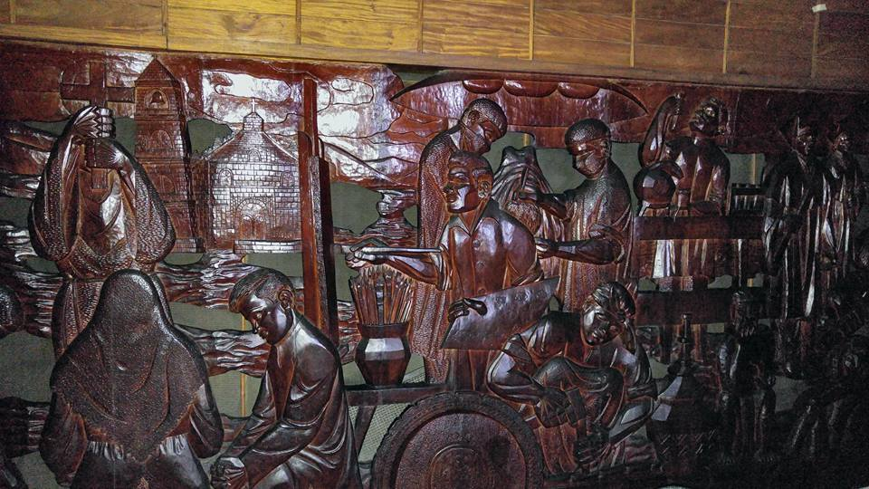
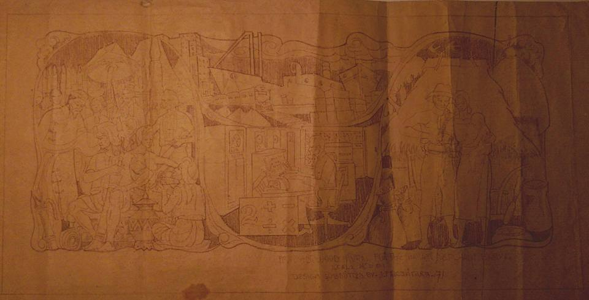

Style
Alcantara's art reflects local Filipino culture, history, themes and ways of life. Here are a few samples of some of his most notable and acclaimed works of art (click to enlarge):

Mother and Child (1953)

Section of Alcantara's famous wooden mural at the PhilAm Life Auditorium in Manila. Sculpted in 1961.

Alcantara's sketch of proposed mural at the Makati Merchant Bank. Sketched in 1971.

Ina ng Lahi (1951)